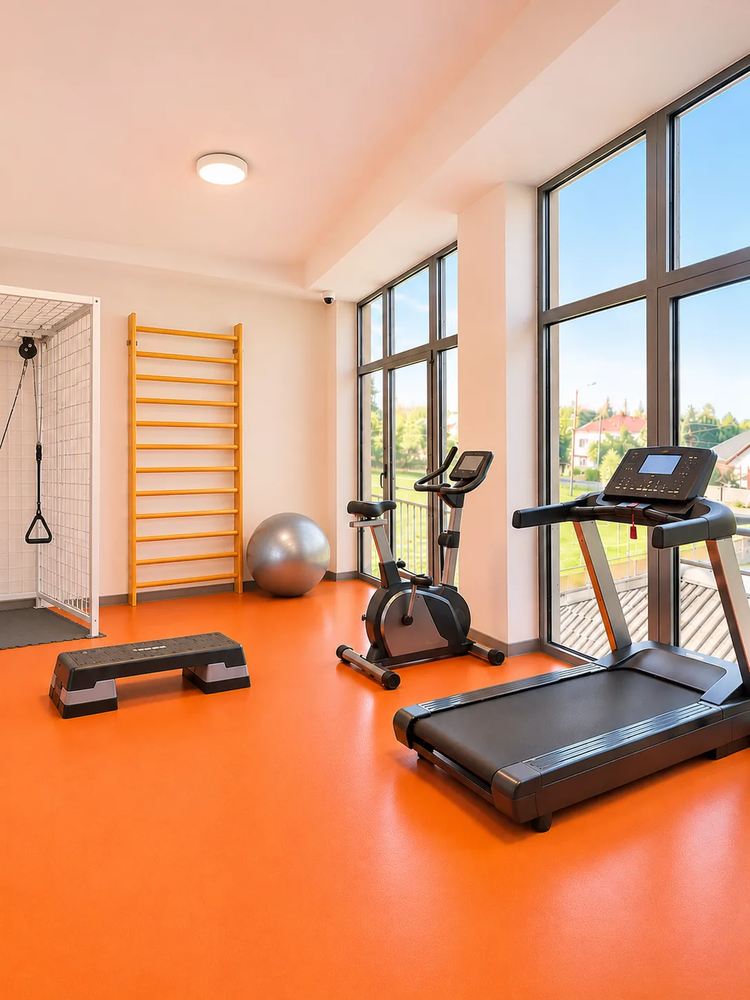
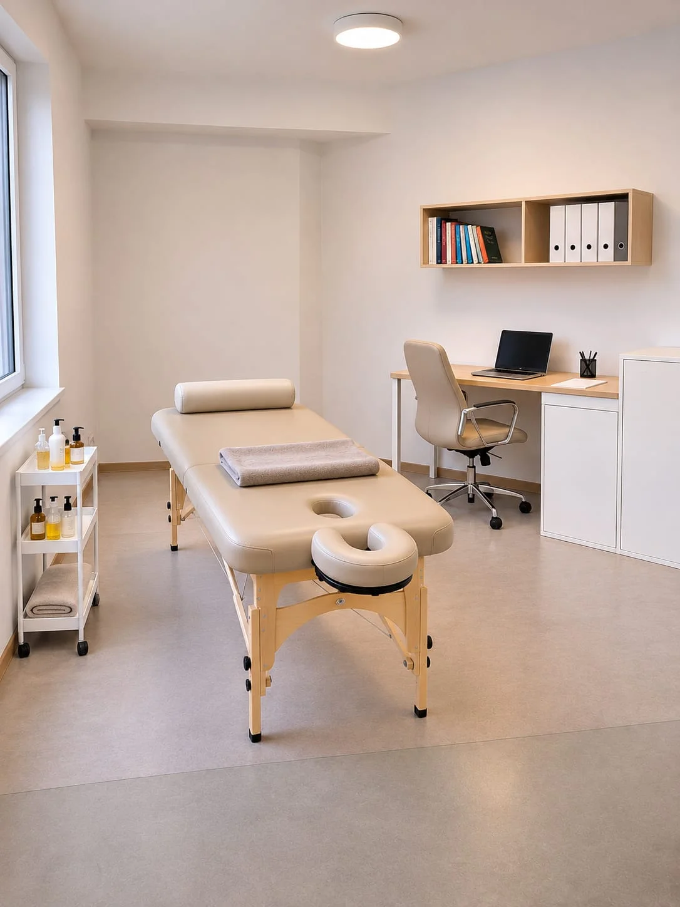

Fizjoterapia i rehabilitacja
Sprawność, samodzielność i dobre samopoczucie w każdym wieku.

W Pomarańczy – Centrum Seniora dbamy o zdrowie i aktywność ruchową. Do dyspozycji naszych gości oddajemy profesjonalnie przygotowany gabinet fizjoterapii oraz wyposażoną salę ćwiczeń.
Oferujemy zajęcia ruchowe i wsparcie fizjoterapeutyczne dla uczestników Dziennego Domu Seniora, a także indywidualną fizjoterapię i rehabilitację dla osób spoza naszego ośrodka.
Każda forma terapii dostosowywana jest do indywidualnych potrzeb i możliwości.
Bo sprawność to niezależność i lepsza jakość życia – niezależnie od wieku.

Dbamy o to, by ćwiczenia były bezpieczne, dopasowane do możliwości i prowadzone w życzliwej atmosferze. Celem jest większa sprawność, mniej bólu i więcej samodzielności na co dzień.
Rehabilitacja jako osobna usługa
- Nie trzeba być uczestnikiem Dziennego Domu Seniora
- Wystarczy umówić się na termin telefonicznie lub osobiście
- Zajęcia dopasowane do potrzeb i stanu zdrowia
Dla uczestników Dziennego Domu Seniora
- Fizjoterapia jest stałym punktem planu dnia
- Ćwiczenia odbywają się na miejscu, bez dodatkowych dojazdów
- Fizjoterapeuta zna uczestników i śledzi ich postępy
Umów się na rehabilitację
Zadzwoń lub napisz – powiemy, jak wyglądają zajęcia, i wspólnie dobierzemy dogodny termin.
Skontaktuj się